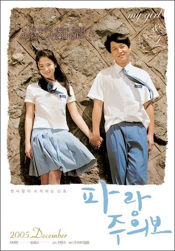
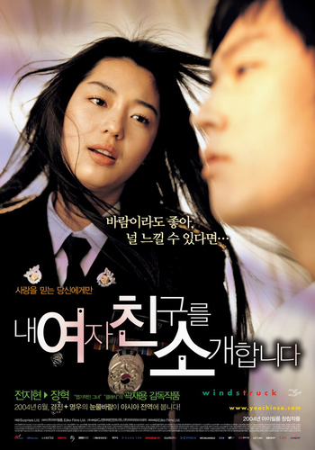
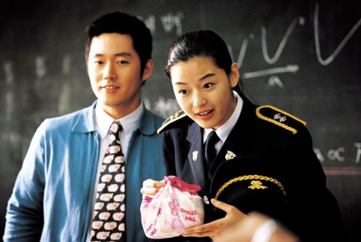

List of my favorite movies
Table of Contents
Hollywood movies
The Social Network (2010)
Mark Zuckerberg creates a social networking site, Facebook, with his friend Eduardo's help. Though it turns out to be a successful venture, he severs ties with several people along the way.
- Year: 2010
- Genre: Drama/History
- Rotten Tomatoes: 96%

Figure 1: A hacking scene from the movie.
My thoughts
This movie changed my life. How? This is the point when I started learning html, basically it was my starting point into computers. I started learning web dev because I got inspired with this movie.

Figure 2: Jesse Eisenberg smiling (Scene from The Social Network)
Jesse Eisenberg is my favorite actor. I like all of his movies. He played Mark Zuckerberg role and he was brillant. I am not a fan of Mark Zuckerberg, but I fell in love with this movie character played by Jesse.
This movie is directed by David Fincher. I kinda like every movie directed by David Fincher, he turn even a simple scene into an Art.
Never Let Me Go (2010)
Kathy, Tommy and Ruth are raised in an idyllic environment at Hailsham, a boarding school. Even as they deal with pangs of love, a teacher lets it slip that their fate has already been written.
- Year: 2010
- Genre: Sci-fi/Romance
- Rotten Tomatoes: 71%

Figure 3: A scene from the film.
My thoughts
I love this movie. It's based on a Kazuo Ishiguro's 2005 novel Never Let Me Go. It's really hard to put in words but all I can say is, for me this movie shows the value of your life. I love drama movies and this is one of the best I got.

Figure 4: Screenshot from the movie.
I strongly recommend you this movie. Remember, this movie can make you cry. I hardly cry watching movies, but this was tough for me too. Andrew Garfield did really awesome acting. This movie is not a horror movie but it left a sense of fear inside you. But if you are into reading novels, then I will recommend reading novel.
Scott Pilgrim vs the World (2010)
Scott Pilgrim meets Ramona and instantly falls in love with her. But when he meets one of her exes at a band competition, he realises that he has to deal with all seven of her exes to woo her.
- Year: 2010
- Genre: Action/Romance/Comedy
- Rotten Tomatoes: 82%

Figure 5: Cute scene from the film.
My Thoughts
This movie is a pure Art. I love quick clever humor. This movie makes me laugh real hard. Movie goes very quick, So no point of getting bored.

Figure 6: I love all songs of this movie.

Figure 7: Every little joke is adorable.

Figure 8: Badass battle scenes by Ramona is satisfying to watch.
You can't find any movie similar to this. It's a very unique movie to watch.
Mother (2017)
A poet and his wife lead a tranquil existence in a burnt-out house. However, when uninvited guests come barging in, the couple's life turns chaotic and shocking events unfold.
- Year: 2017
- Genre: Horror/Thriller
- Rotten Tomatoes: 68%
- Torrent: Mother! (2017) [1080p] [YTS] [YIFY]

Figure 9: Movie poster + Scene combined.
My Thoughts
This movie will f**k you up completely. It's will confuse you. In start you might end up getting bored and in the last you might end up getting frustrated.
I have to say Jennifer Lawrence did brilliant acting, This is first time I love her role, 100 times better than The Hunger Games.
I want you remember some points before watching this movie.
This is a horror movie. It's not!- Finish the whole movie carefully, even if it makes no sense.
- Don't forget to watch mother! (2017) Ending Explained + Analysis after the movie.

Figure 10: A scene from the film.
I must say this movie is way too deep and clever written. I love the ending, all the drama and weirdness this movie holds. If you like crazy thrillers then give it a shot!
If I Stay (2014)
I like drama movies and if I stay is a full drama. I love this movie.

Figure 11: A scene from the movie.
Korean Movies
My Girl and I (2005)
My Girl and I is a 2005 South Korean film directed by Jeon Yun-su. It is a remake of the Japanese film Crying Out Love, In the Center of the World, adapted from the novel Socrates in Love by Kyoichi Katayama.
- Year: 2005
- Genre: Romance/Drama
- Rotten Tomatoes: 67%
Figure 12: A scene from the film.
My Thoughts This was the first korean movie I ever watched, I enjoyed it. I started loving korean romance drama. Because they never go over the top. Korean love story movies are pretty simple but lovely.

Figure 13: My Girl and I movie poster.
This movie showed some teenage love. I believe if you are a teenager, you might love this movie more. I watched this movie at my teenage.
Windstruck (2004)
Windstruck is a 2004 South Korean romantic drama. It stars Jun Ji-hyun, Jang Hyuk, and was directed by Kwak Jae-yong. The film held its premiere in Hong Kong, attended by Jang and Jun, on 28 May 2004, being the first Korean film to do so. It was released on June 3, 2004 by CJ Entertainment and ran at 123 minutes.
- Year: 2004
- Genre: Romance/Drama
- Rotten Tomatoes: (No Rating)

Figure 14: A scene from the film.
My thoughts First of all, I love Jun Ji-hyun, she is the reason why I started watching korean movies. Her expressions are adorable. You should definitely watch this movie. This movie is a complete mix, it's funny, sad, action everything.

Figure 15: A scene from the film.